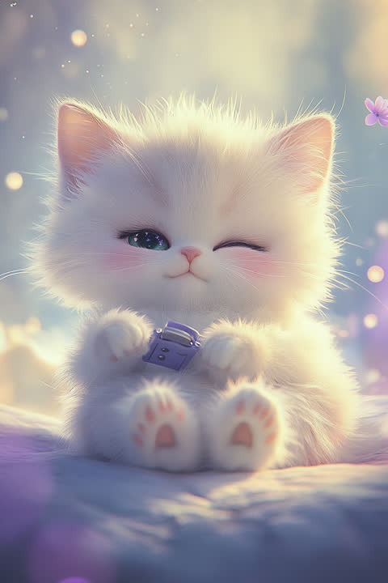

In the language of Five Element fortune-telling, the 'The Cat With the Mood-Dependent 'Go' Switch' type carries a Metal temperament. Lucky color: platinum.
You don't read the manual. You pick the thing up. That's how you learn — hands first, theory later — and when something genuinely hooks you, your focus gets almost unsettling. Nobody knows where that switch is, possibly including you. You slip quietly out of range the moment anything feels like a leash, yet when real trouble hits, you're suddenly the calmest, most useful person in the room. Your element is Metal — cutting cleanly through the noise to what actually matters. Lucky color: platinum. Tip: "they'll figure out how I feel" — they usually don't. Say it out loud occasionally; life gets easier.
Clingy isn't your style — but cold isn't either. You love like a breeze: closest to the person who lets you come and go freely. Your ideal isn't hourly check-ins; it's two people doing their own thing and drifting back together at night. You don't hand out many words, but when your partner is truly in trouble, you're the first one there. Your Metal energy suggests a love that lasts longest when you keep your own rhythm. Lucky action: wear a piece of silver or gold jewelry. Tip: a breeze can't be caught by waiting. Once a month, be the one who blows their way first.
You weave through the gridlock and arrive at the scene by the shortest possible line. Field over manual, the actual thing over another meeting. The moment trouble hits, you become the calmest person there — the one everyone means when they say "just call that person." Long standing meetings and micromanaged trackers, though, nearly stall your engine. Your Metal energy backs clean, unhesitating decisions. Lucky action: use white or gold stationery. Tip: alongside handling what's in front of you, unfold the map once a month — mobility with a destination is even more powerful.
Mechanical and electrical engineering, hands-on technical work like maintenance or construction management, infrastructure operations, and frontline response roles like emergency medicine or firefighting. Someone whose hands stay steady in a situation the manual never covered is rare — "the technician you call when things break" is your natural seat.
Your next step is solving "how to keep going after the interest runs out" with systems, not willpower. When the switch is on you're unstoppable; the moment it flips off, you stall — that's this type's weak spot. Rather than gritting through it, engineer around motivation: chop the boring work into small chunks, pair up with someone, put the deadline in someone else's hands. The other thing: say what you're thinking out loud, even just a sentence. Your silence can read to others as "in a bad mood" or "couldn't care less," and a single "here's where my head's at" clears up nine-tenths of the misunderstandings.
This quiz scores your Personality, Love, and Career types independently, so the three don't always come out as the same type. Curious what your real type is? Try the free 3-minute quiz.